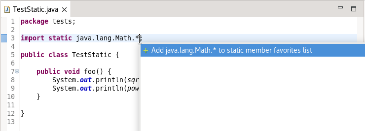
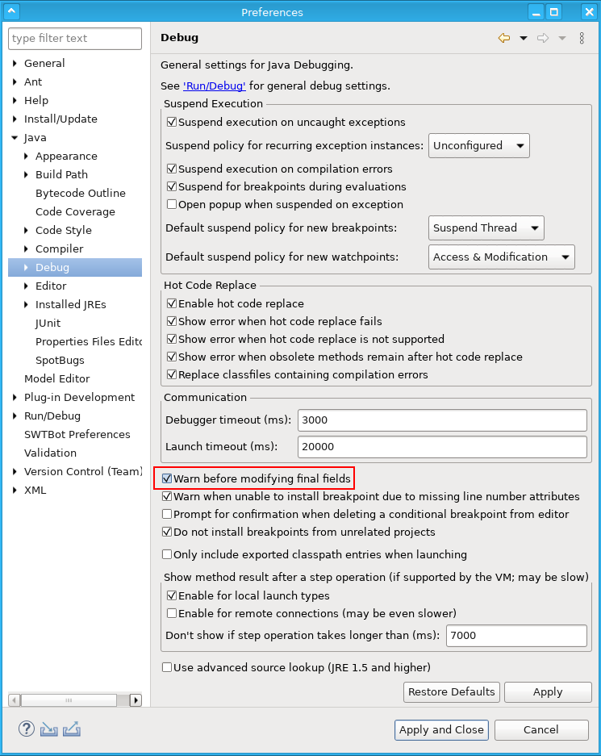
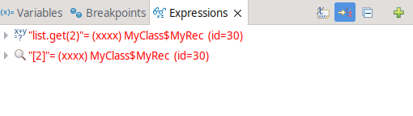

JUnit
Java Editor
The below image shows the module names that this project has access to being suggested, when 'Ctrl + Space' is pressed at the cursor location.

The below image shows the packages that the above selected module exports, when 'Ctrl + Space' is pressed at the cursor location.

The below image shows the classes in the above selected package, when 'Ctrl + Space' is pressed at the cursor location.


Java Views and Dialogs
Java Compiler
Java Formatter
Debug
Since Eclipse 3.1 Eclipse Java debugger allows changes on final field values. While technically possible, the consequences of such changees are not trivial, could affect seemingly unrelated code and lead to various dangerous effects.
Therefore, with Eclipse 4.23 Java debugger shows now a new warning:

This warning is enabled by default and can be disabled via preferences:

Additionally, "org.eclipse.debug.ui.variableValueEditors" extension point is updated to allow custom products contribute their own "variableValueEditor" implementations to existing debug models and have even more control over final fields modifications.
Since Eclipse 4.22, the Java debugger allows to label object instances with custom strings. This feature has been extended to show those labels in the Expressions view, highlighted with red color by default.

This works for watches and inspected objects too.